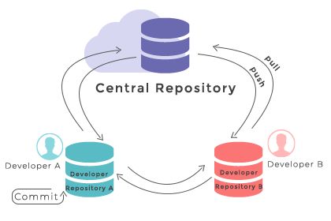

By far, the most widely used modern version control system in the world today is Git. Git is a mature, actively maintained open source project originally developed in 2005 by Linus Torvalds, the famous creator of the Linux operating system kernel. A staggering number of software projects rely on Git for version control, including commercial projects as well as open source. Developers who have worked with Git are well represented in the pool of available software development talent and it works well on a wide range of operating systems and IDEs (Integrated Development Environments).
Having a distributed architecture, Git is an example of a DVCS (hence Distributed Version Control System). Rather than have only one single place for the full version history of the software as is common in once-popular version control systems like CVS or Subversion (also known as SVN), in Git, every developer's working copy of the code is also a repository that can contain the full history of all changes.
In addition to being distributed, Git has been designed with performance, security and flexibility in mind.
The raw performance characteristics of Git are very strong when compared to many alternatives. Committing new changes, branching, merging and comparing past versions are all optimized for performance. The algorithms implemented inside Git take advantage of deep knowledge about common attributes of real source code file trees, how they are usually modified over time and what the access patterns are.
You need to type two lines to configure Git and link it to GitHub. In the following commands:
- Replace USERNAME with the username that you created on GitHub
- ReplaceEMAILwithyouremailaddress
- git config --global user.name "USERNAME"
git config --global user.email "EMAIL"
When you use Git, you create one repository for each program or project that you work on. I suggest that you create all your Git repositories under a single directory called git
- cd ~/git
mkdir GitExercise
cd GitExercise

Adding files to your Git repository
You only need to do this when you have a new file that you want to track with Git. Having specified that the file should be tracked, we need to tell Git that we have
made changes to the file that we want it to record:
- git commit -a -m "Initial version"
Finding out what’s happening
To find out whether there are any files that are not being tracked by Git or whether there are files that are being tracked that haven’t been committed:
Synchronizing your local Git repository with GitHub
To synchronize your local repository with GitHub, proceed as follows:
- Go to the GitHub.com web site and make sure you are logged in,
- In the top right corner, you should find a + sign. Click this and then click New repository,
- Enter the name of your repository
- Add a description of your repository — something like “Git Exercise”,
- Do not select the option to “Initialize this repository with a README”,
These steps have created an empty repository on GitHub; you now need to syn- chronize your local repository with this.
Deleting and renaming files
Normally you would delete a file with rm and rename or move a file using mv. How- ever, we also need to tell Git that we have deleted, renamed or moved a file. To do that we have to remember to delete, rename or move the file via Git.
Do not do this now, but if, for example, we wished to rename our proteins.txt file to proteininfo.txt we would do:
- git mv proteins.txt proteininfo.txt
- Similarly to delete a file and stop Git from tracking it we would do:
git rm proteins.txt
Let’s add something else to the proteins.txt file, but something that was clearly a mistake.
If you now type git status you will be told that the file has been changed, but that you haven’t committed the changes yet. At this stage, you can go back to the version without the changes:
- git checkout -- proteins.txt
cat proteins.txt
As you will see, the file has reverted back to what it was before you added the lines. If you have modified more than one file and want to reset everything to the last
commit, you can also do
git reset --hard
to reset all the files.
Suppose however that you have committed a change and now want to undo that change and revert to the previous version. You will recall that when you use git log you are shown the comments, but also shown lines saying commit with some appar- ently random set of letters and numbers. This is an identifier for a particular commit. We can use git revert with one of these identifiers to remove the changhed that happened in that commit. In practice, you only need about the first 6 or 7 characters of the commit identifier to identify a particular commit uniquely.
Again add something to the proteins.txt file that we will clearly wish to undo.
Often we find that we have a version of a program (or script) that we are happy with, but we want to add some new feature(s). Whenever we make changes we risk break- ing the existing version. Git allows us to create experimental ‘branches’ where we can develop new features before merging them back into the master repository.
This is also useful when we have multiple people working on a project. Each per- son creates a branch for the feature or bug-fix they are working on and when they are finished they merge it back into the master branch.
Suppose we want to modify our proteins file to include the length of each protein. Adding that extra field to the file might well break some program that relied on the file, so we will do it in a new branch called ‘protlength’.
We create a new branch using
git checkout -b branchname